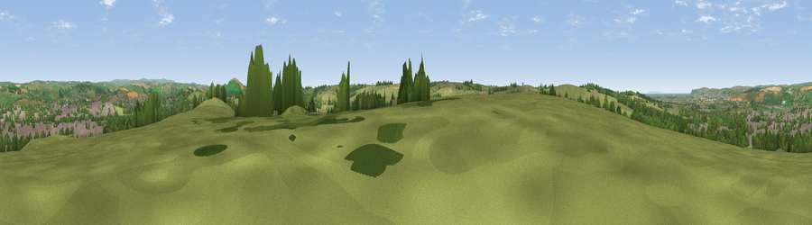

Viewpoint near Eastacombe
#15115 in England · top 32% of its area beats it · near EastacombeThe view, rendered

A 360° render of this exact spot computed from the terrain model, tree cover and land cover — summer colours, afternoon light, calibrated against photographs of famous viewpoints. Real trees, hedges and buildings will differ in detail.
The panorama
Grey silhouette: terrain skyline in each direction (720 bearings, Earth curvature and refraction included). Dashed green: skyline with trees (+15 m) and buildings (+8 m) as obstacles. Blue strip: how far the ground is visible on each bearing.
Where the view opens
Wedge length = distance to the farthest visible ground on that bearing (vegetation-aware). Rings at 10, 25 and 50 km.
What fills the view
54% grassland · 19% woodland · 18% built-up · 8% cropland · 2% water
Angular shares of the visible panorama (visual magnitude), not map area. Landscape diversity 0.55 (0–1 Shannon).
Key numbers
More beautiful places nearby
The staircase of upgrades: each row has a higher view potential than everything closer. Driving times are estimates from straight-line distance, calibrated against real road routing — check an actual route before setting out.
| Place | Direction | Drive | Score |
|---|---|---|---|
| Viewpoint near Yelland | W · 3 km | ~8 min | 60.6 |
| Viewpoint near Bishop's Tawton | ESE · 4 km | ~9 min | 73.8 |
| Codden Hill | ESE · 5 km | ~11 min | 81.3 |
| Viewpoint near Croyde | NW · 12 km | ~22 min | 83.7 |
| Viewpoint near Woolacombe | NW · 14 km | ~25 min | 84.7 |
| Viewpoint near Combe Martin | NNE · 18 km | ~31 min | 86.9 |
| Viewpoint near Combe Martin | NNE · 18 km | ~32 min | 88.9 |
| Holdstone Hill | NNE · 19 km | ~32 min | 90.2 |
51.05716, -4.09000 · source: screening · position refined by local search. Computed location — check access rights before visiting.